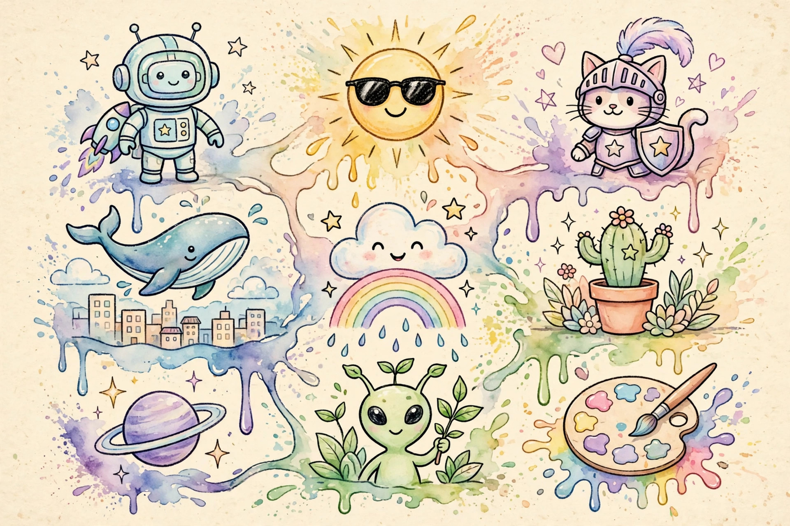

Craiyon Review: The Original Free AI Doodle Machine
Before "AI image generator" was a product category, there was Craiyon — born as DALL·E mini in 2021, the viral toy that let anyone turn text into nine weird little pictures. It's still here, still free, still no sign up. The quality never caught up to the big names, but that's not the point. I tested whether the original still earns a bookmark in 2026.
| Verdict | 6/10 — ancient, charming, and honest about what it is |
|---|---|
| No sign up? | Yes — no account needed, ever |
| Price | Free forever; optional paid tiers ($10+/mo) for faster generation and no watermark |
| Best for | Quick brainstorming, memes, silly concepts, showing kids how AI works |
| Watch out for | Distinctly low-fi quality; 1–2 minutes per batch; watermark on free images |

What is Craiyon?
Craiyon (craiyon.com) is the granddaddy of free AI image generators. Built by Boris Dayma, it launched in 2021 as "DALL·E mini" — a fan-made, open imitation of OpenAI's DALL·E — and went properly viral in 2022 with its surreal, dreamlike outputs. It rebranded to Craiyon to stand on its own, and it never stopped being the simplest text-to-image box on the internet.
The formula hasn't changed: type a prompt, wait a minute or two, get a 3×3 grid of nine images. No settings to fiddle with, no model picker, no negative prompts. It's the anti-Mage.space — and for a certain kind of use, that's a feature, not a bug. It earned its place in our no-signup image generator roundup as the "just press the button" option.
The no-signup test
Fresh private window, craiyon.com, prompt in, Draw button hit. No login, no email, no "3 of 5 free generations" counter. I ran multiple prompts back-to-back — a robot chef, a castle made of cheese, the usual stress tests — and never once saw a registration wall. The free tier is unlimited in the practical sense: you can keep generating all day.
What you can't escape on the free tier is the queue. Each batch takes one to two minutes, and there's no skipping it without a paid plan. The site is honest about this: free = slow, paid = priority. No dark patterns, no fake "your images are ready, sign up to see them."
Free limits: what's actually free
Everything on the core generator is free: unlimited prompts, nine images each, negative keywords supported, downloads included. The paid tiers ($10/month and up, depending on plan) buy you three things: priority generation (15–45 seconds instead of minutes), watermark removal, and private commercial-use rights.
The watermark is the main free-tier tax — a small Craiyon logo on downloaded images. For memes, personal projects, and brainstorming, nobody cares. For client work, either pay or pick a different tool. Also note the resolution: outputs are small (around 768px), fine for screens, not for print.
Output quality
Let's be straight: Craiyon's images look like 2022. The model's outputs have a signature style — soft, slightly melty, dreamlike, occasionally brilliant by accident. Photorealism is not happening. Faces are approximate. Text in images is a lost cause.
But here's what four years of testing taught me: Craiyon is a better brainstorming partner than its quality suggests. Nine varied interpretations of one prompt surface angles you wouldn't have thought of. I use it the way I'd use a sketch artist who works fast and loose — not for the final product, but for the first idea. For polished output, graduate to something like Perchance's image generator or a real SD-based tool.
Best for
- Idea generation: nine variations per prompt is a brainstorming cheat code
- Memes and jokes: the lo-fi aesthetic is the point
- Kids and classrooms: zero setup, instant results, safe and simple
- Concept checks: "what would a sneaker shaped like a croissant look like" — answered in two minutes
Limitations
- Quality ceiling: the model is years behind modern generators — don't expect polish
- Speed: 1–2 minutes per batch on the free tier; the queue is the price of free
- Watermark: free downloads carry a small Craiyon logo
- Resolution: small outputs, fine for screens and social, not for print
- No controls: no model choice, no style settings, no inpainting — what you get is what you get
Craiyon vs the alternatives
Against Mage.space: Mage wins on quality and control by a mile. Craiyon wins on zero-friction simplicity — no model picker, no settings, just type and wait.
Against Perchance's image generator: similar casual-use energy, but Perchance's underlying models are newer and the interface is snappier. Craiyon keeps the crown for pure nostalgic charm.
Against Pollinations: Pollinations is faster and API-friendly; Craiyon is the one your grandmother could use. Different audiences.
FAQ
Is Craiyon really free with no sign up?
Yes. I generated multiple batches with no account and no email. Free forever is the stated model; paid plans are purely optional upgrades.
How many images do you get per prompt?
Nine — a 3×3 grid. Every prompt, every time, on the free tier.
Why is Craiyon so slow?
Free users share GPU time; each batch takes 1–2 minutes. Paid plans ($10+/month) cut that to 15–45 seconds with priority generation.
Can I use Craiyon images commercially?
The paid tiers include private commercial-use rights. For free-tier images, check the current terms — the safe move for client work is a paid plan or a different tool.
What's the difference between Craiyon and DALL·E mini?
Same tool, different name. It launched as DALL·E mini in 2021 and rebranded to Craiyon in 2022.
Is Craiyon good for anything serious?
For finished artwork, no — the quality isn't there. For rapid ideation, storyboarding concepts, and teaching people how text-to-image works, it's genuinely useful.
Verdict
Craiyon is a museum piece that still works — the tool that introduced millions of people to AI image generation, still free, still account-free, still happily churning out nine dreamy images per prompt. It will never win on quality. It wins on being the lowest-friction creative toy on the internet.
6/10. Not the best generator, but maybe the most honest one: it promises nine free images and delivers exactly that. Bookmark it for brainstorming; look elsewhere for beauty shots.
Open craiyon.com — no sign up →
Tested 2026-10-15 · Providers change their signup policies — we re-verify regularly.